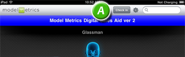
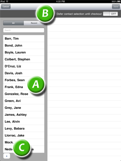

| Before meeting with a prospect, tap the Check In button (A) at the top of the screen: |  |
|---|---|
| A list of your Salesforce contacts will appear. Select a contact from the list on the left pane (A). You can also search by entering a full or partial name in the window above the list. The two buttons above the window allow you to toggle between all your contacts and recently-used contacts. The + sign at the bottom of the list (C) <to be completed>. The defer button (B) allows you will select a contact after viewing documents. This allows the creating of new contacts later, if needed. |  |
| Click the Done button on the top right when you are finished or Cancel on the top left to disregard and return to the home screen. Note: When you've checked in a contact, the Check In button changes to Check Out. | |